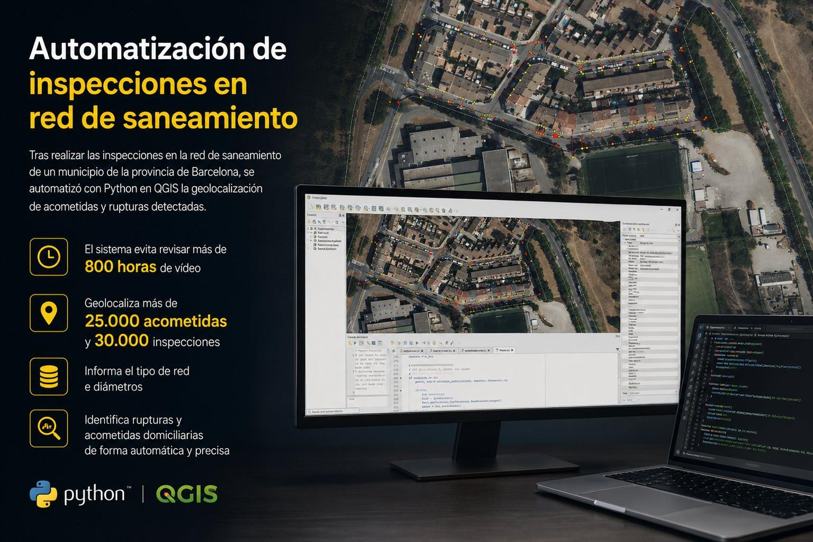
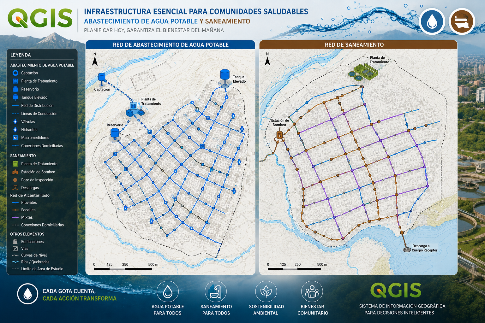
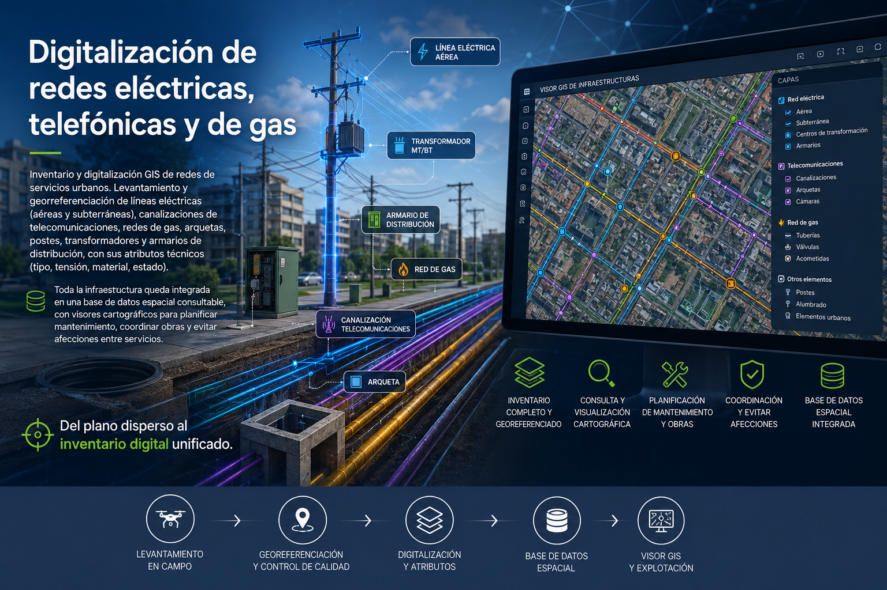
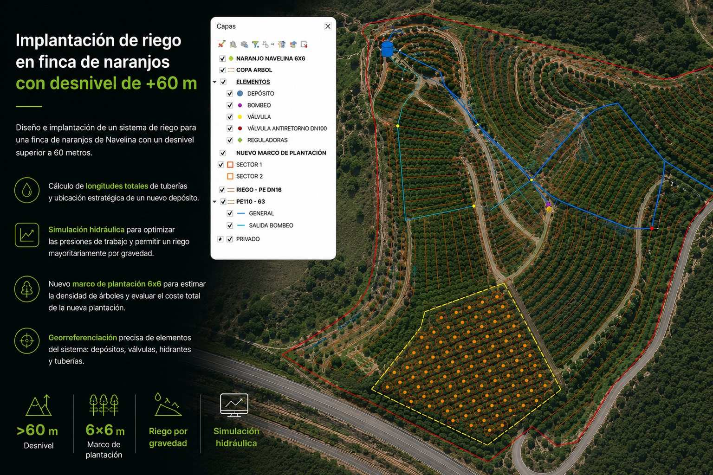
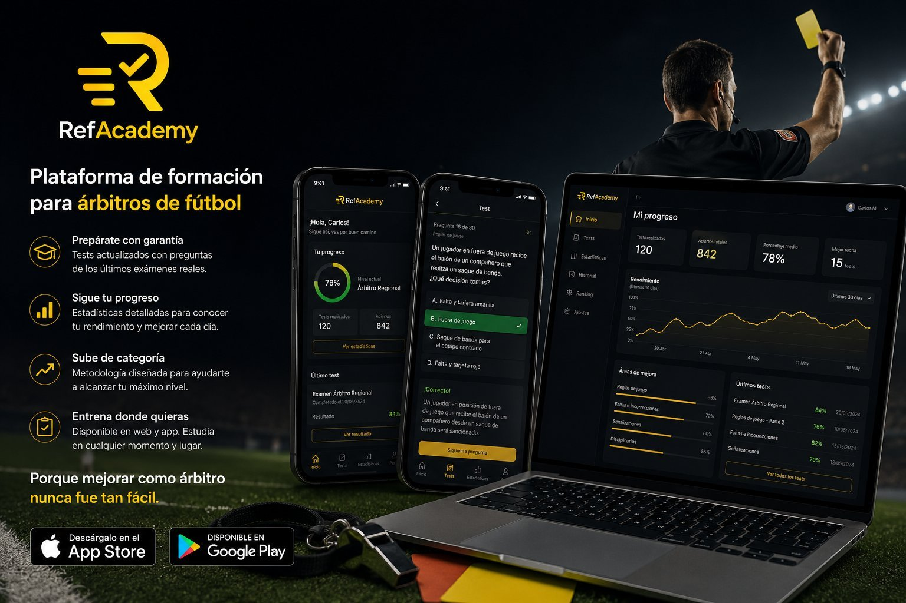
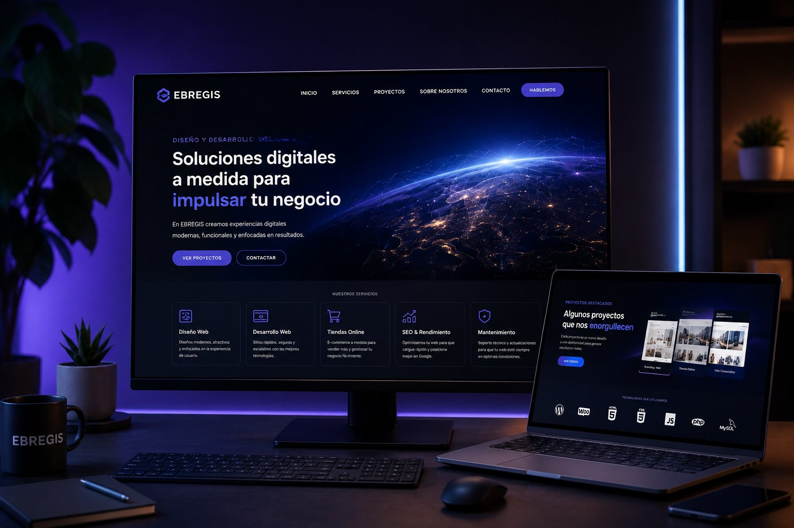
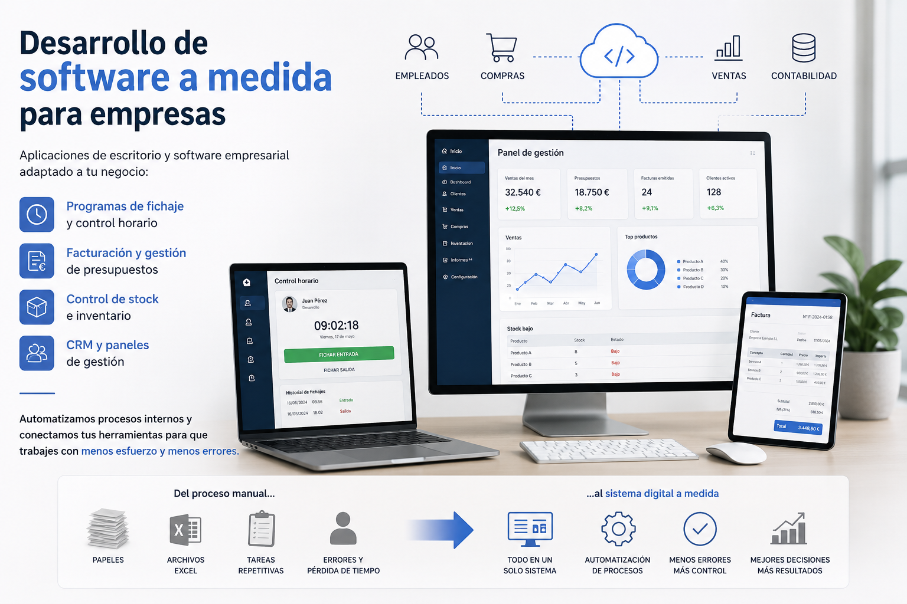
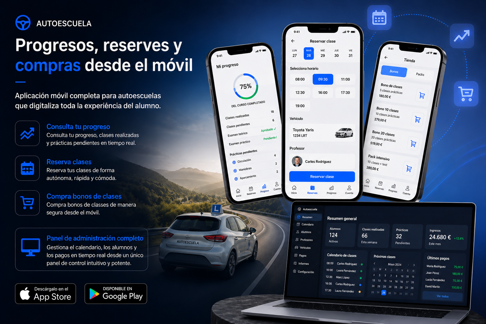

Últimos proyectos
Desde aplicaciones móviles hasta análisis geoespacial: proyectos reales con resultados directos y medibles.

Automatización de inspecciones en red de saneamiento
Tras realizar las inspecciones en la red de saneamiento de un municipio de la provincia de Barcelona, se automatizó con Python en QGIS la geolocalización de acometidas y rupturas detectadas durante las inspecciones. El sistema evita revisar más de 800 horas de vídeo, geolocaliza más de 25.000 acometidas y 30.000 inspecciones, informa el tipo de red, diámetros e identifica rupturas y acometidas domiciliarias de forma automática y precisa.

Digitalización de redes de agua y saneamiento
Inventario y digitalización GIS de redes de abastecimiento de agua y saneamiento. Levantamiento y georreferenciación de tuberías, colectores, válvulas, hidrantes, pozos, acometidas y depósitos, con sus atributos técnicos (material, diámetro, presión, estado). Toda la red queda estructurada en una base de datos espacial consultable, con visores cartográficos para planificar mantenimiento, detectar incidencias y optimizar la gestión del agua. Del plano en papel al gemelo digital de la red.

Digitalización de redes eléctricas, telefónicas y de gas
Inventario y digitalización GIS de redes de servicios urbanos. Levantamiento y georreferenciación de líneas eléctricas (aéreas y subterráneas), canalizaciones de telecomunicaciones, redes de gas, arquetas, postes, transformadores y armarios de distribución, con sus atributos técnicos (tipo, tensión, material, estado). Toda la infraestructura queda integrada en una base de datos espacial consultable, con visores cartográficos para planificar mantenimiento, coordinar obras y evitar afecciones entre servicios. Del plano disperso al inventario digital unificado.

Implantación de riego en finca de naranjos con desnivel de +60 m
Diseño e implantación del sistema de riego en una finca de naranjos Navelina con un desnivel superior a 60 metros. Se calcularon las longitudes totales de tubería a instalar (PE DN16 y PE110-63), se ubicó un nuevo depósito y se realizó una simulación hidráulica para ajustar correctamente las presiones, optimizando costes al regar mayoritariamente por gravedad. Adicionalmente, se definió un marco de plantación 6x6 para estimar cuántos árboles caben en la parcela, facilitando el cálculo del coste total de la nueva plantación. De cara a futuros proyectos, EBREGIS puede realizar también la obra civil.

RefAcademy — Plataforma de formación para árbitros de fútbol
Lanzamiento de una web y una aplicación disponible en App Store y Google Play diseñada para árbitros de fútbol que quieren mejorar su conocimiento técnico y preparar los exámenes oficiales. La plataforma incluye tests con preguntas de los últimos exámenes reales, estadísticas de progreso personalizadas y una metodología orientada a subir de categoría. Porque mejorar como árbitro nunca fue tan fácil.

Diseño y desarrollo web profesional a medida
Diseño, desarrollo y despliegue de páginas web profesionales a medida para empresas y autónomos. Desde la arquitectura de la información hasta la puesta en producción: sitios web corporativos, landing pages optimizadas para conversión, portfolios y tiendas online. Tecnología moderna, diseño responsive, rendimiento optimizado y posicionamiento SEO desde el primer día. Tu negocio merece una presencia digital que genere resultados reales.

Desarrollo de software a medida para empresas
Aplicaciones de escritorio y software empresarial adaptado a tu negocio: programas de fichaje y control horario, facturación y gestión de presupuestos, control de stock e inventario, CRM y paneles de gestión. Automatizamos procesos internos y conectamos tus herramientas para que trabajes con menos esfuerzo y menos errores. Del proceso manual al sistema digital a medida.

Apps para gimnasios: control de accesos, reservas y comunidad
Aplicación móvil integral para gimnasios y centros deportivos. Control de accesos mediante código QR personal, reserva de clases y espacios en tiempo real, tienda de merchandising integrada, calendario de accesos y actividad, y un foro social donde los socios interactúan y comparten su progreso. El panel de administración gestiona socios, aforos, horarios y ventas desde un único lugar. Más autonomía para el socio, menos gestión manual para el gimnasio.

App de autoescuela: progreso, reservas y compras desde el móvil
Aplicación móvil completa para autoescuelas que digitaliza toda la experiencia del alumno. Desde la app, el alumno puede consultar su progreso y prácticas pendientes, realizar reservas de clases de forma autónoma y comprar bonos de clases directamente desde el móvil. El panel de administración permite a la autoescuela gestionar el calendario, los alumnos y los pagos en tiempo real. Menos llamadas, menos papel, más negocio.
Gestión de reservas para barberías
Plataforma completa para digitalizar la gestión de tu barbería y aumentar tus ingresos. Los clientes reservan online 24/7 eligiendo servicio, fecha y hora en segundos, con recordatorios automáticos por WhatsApp y email para reducir ausencias. El panel de administración centraliza la agenda, los barberos, los horarios y los servicios en tiempo real, accesible desde cualquier dispositivo. Menos llamadas, menos cancelaciones y una experiencia más profesional para tus clientes.